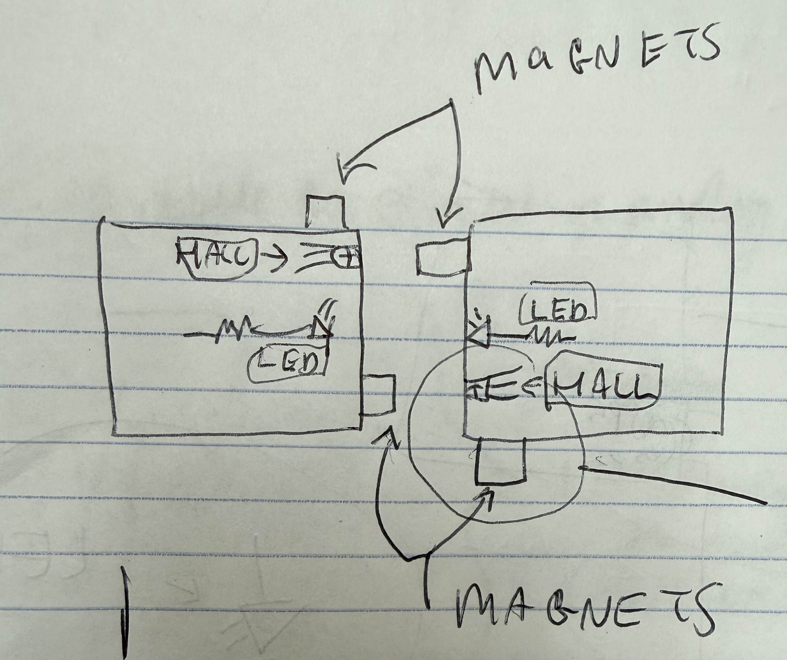
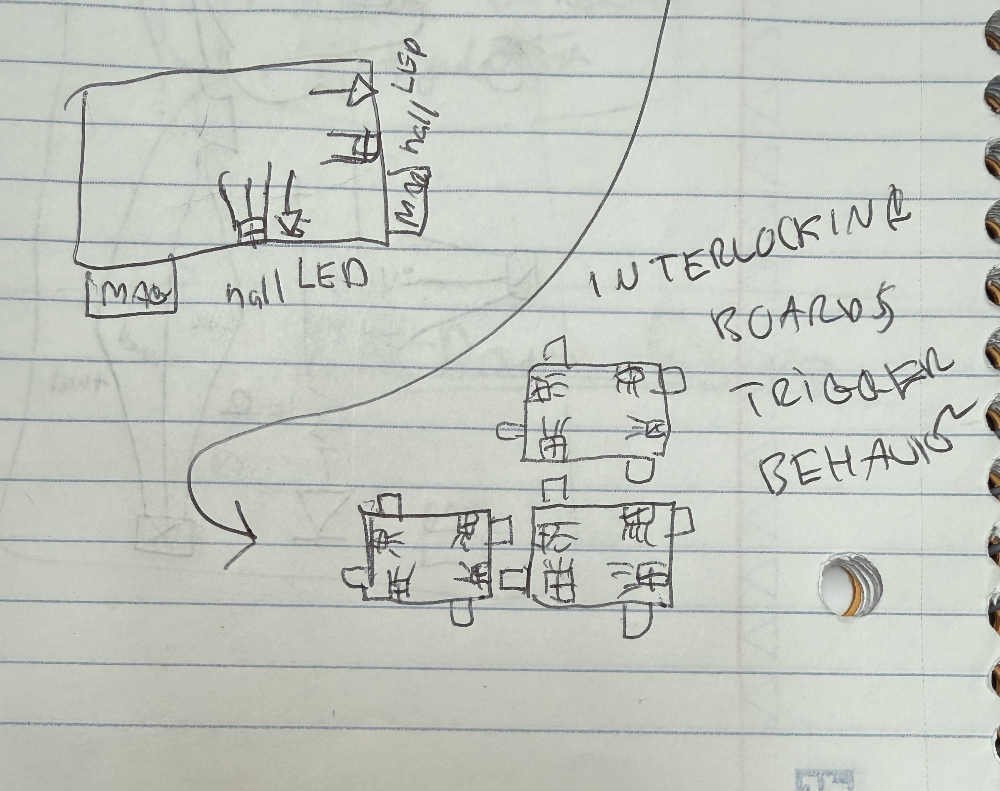
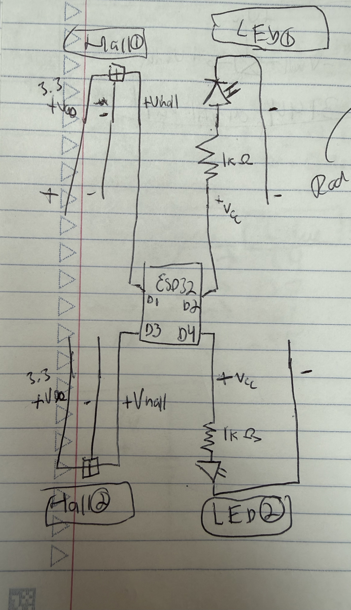
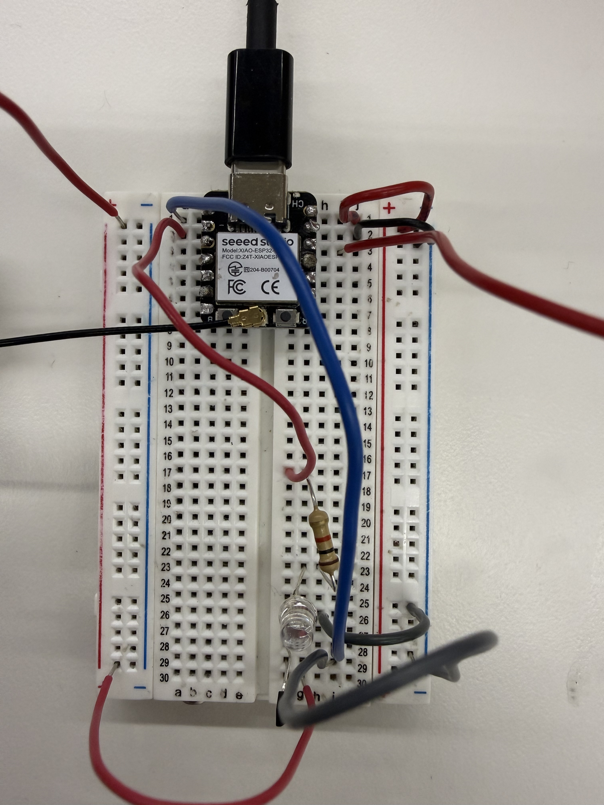
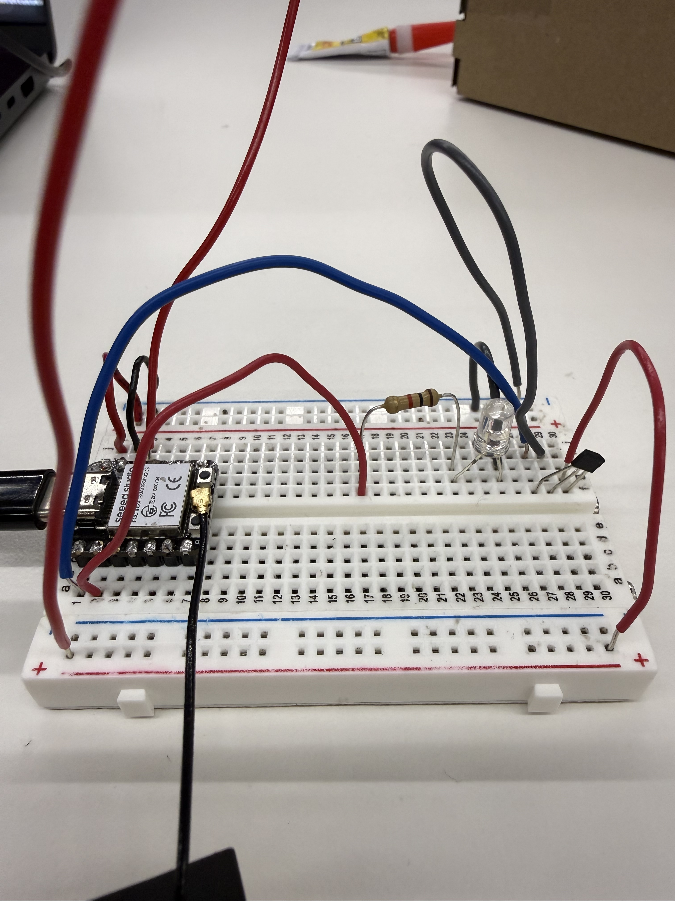
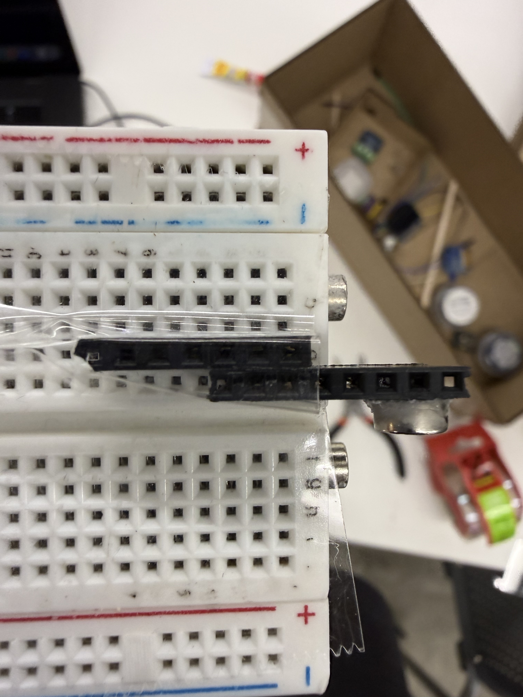

Below is video from a software prototype of my first project idea, Melodia, a physical tile-based music strategy and learning game. The LEDs blink where the valid tile placements can occur. The tiles magnetically interlock, and upon sensing interlock the LED stops blinking.
Two boards that connect and at least one LED that indicates connection status.

The idea is to have a face of two boards have opposing magnet and hall effect sensor.

The idea here is that interlock will occur through magnetic attraction. The sketch shows orientation of halls and magnets, but also how a multi-board arrangement might look. The asymmetry assures pairs.


const int HALL_SOUTH_PIN = D0;
const int LED_SOUTH_PIN = D1;
const unsigned long BLINK_INTERVAL_MS = 300;
unsigned long lastBlinkTime = 0;
bool ledState = LOW;
void setup() {
pinMode(HALL_SOUTH_PIN, INPUT_PULLUP);
pinMode(LED_SOUTH_PIN, OUTPUT);
}
void loop() {
bool isConnected =
digitalRead(HALL_SOUTH_PIN) == LOW;
if (isConnected) {
digitalWrite(LED_SOUTH_PIN, HIGH);
} else {
unsigned long now = millis();
if (now - lastBlinkTime >= BLINK_INTERVAL_MS) {
lastBlinkTime = now;
// blink aka flip the light on/off!
ledState = !ledState;
digitalWrite(LED_SOUTH_PIN, ledState);
}
}
}Hall sensor threshold is sufficient that the magnetic radiation of a strong magnet beneath it, and the connecting board's magnet, does not trigger it. Hence the blinking stops upon interlock only.
Shout out to Victor for pointing out these components I used for a mount. I don't think he realized exactly how I'd use them when I asked for "something flat that could plug into a breadboard that I can glue on." It took two and some tape to be rigid enough to wrangle the magnet.

